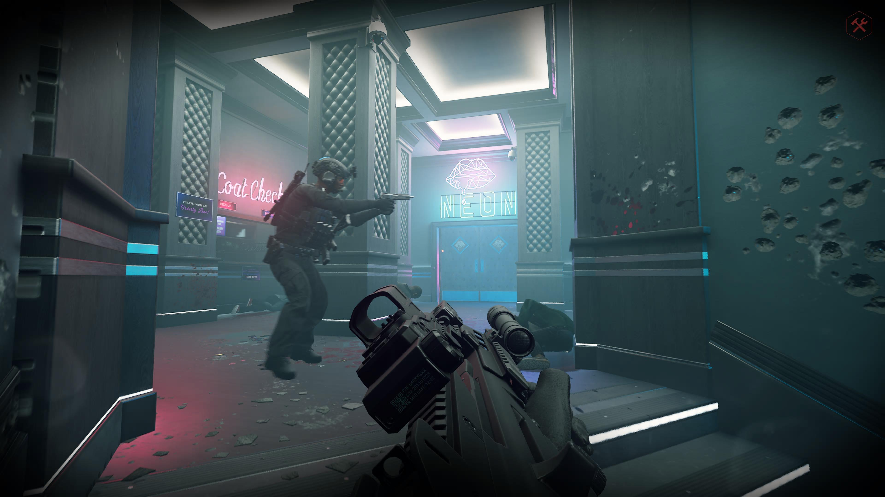
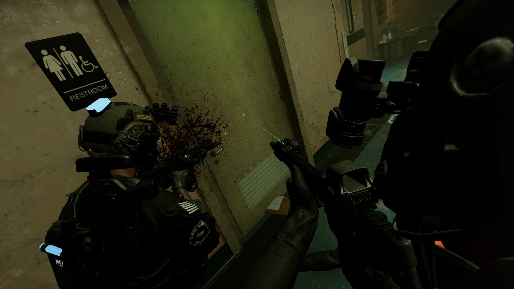

GIDC — READY OR NOT
READY OR NOT
LES OPÉRATIONS DU GIDC
Tactique, coopération et immersion. Découvrez la manière dont le GIDC joue à Ready or Not.
NOTRE FAÇON DE JOUER
DEUX APPROCHES
Au GIDC, Ready or Not peut se jouer selon deux styles. Des opérations structurées et immersives aux sessions plus libres entre membres.

IMMERSION
MILSIM
Des opérations préparées, une communication organisée et un gameplay orienté immersion.
- Opérations structurées
- Communication radio
- Équipement adapté
- Règles spécifiques

DÉTENTE
CHILL
Des sessions plus libres pour jouer ensemble, progresser et simplement passer un bon moment.
- Sessions libres
- Moins de contraintes
- Coopération
- Fun avant tout